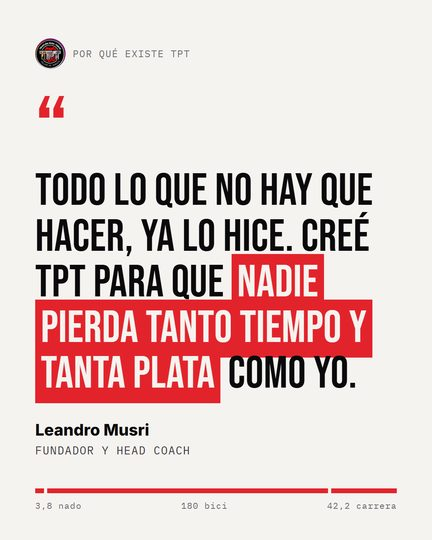
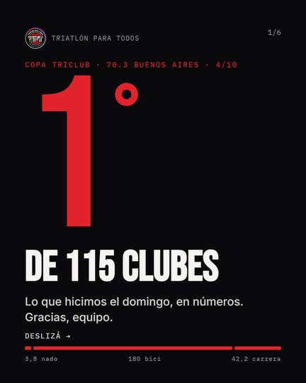
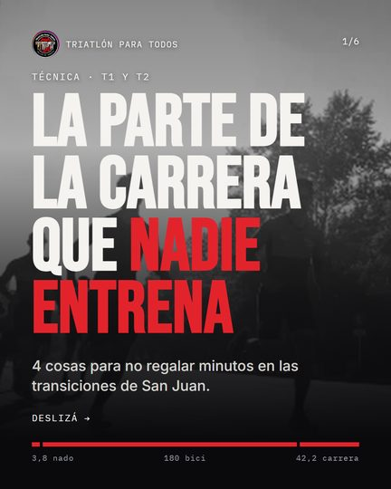
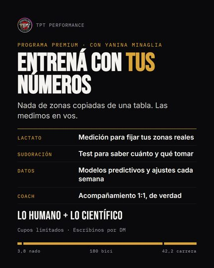
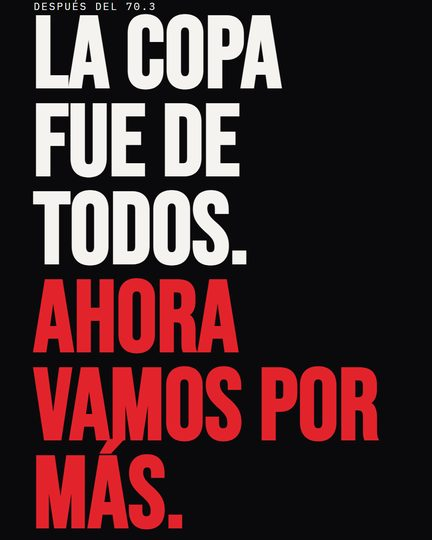
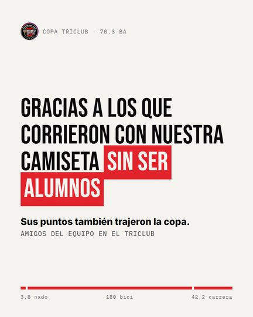
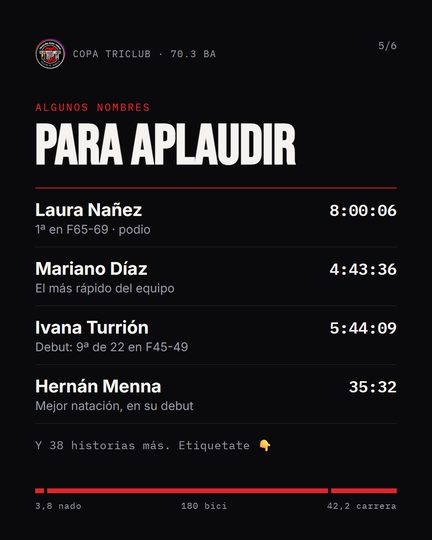
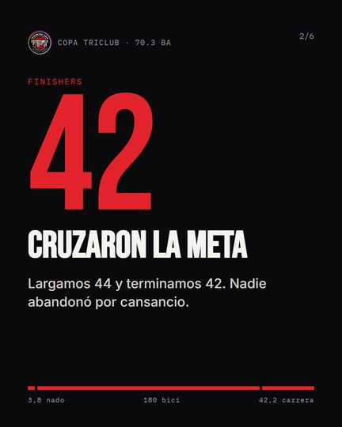

Tu perfil,
ordenado.
Así se vería @triatlonparatodos para alguien que entra por primera vez. Es una maqueta: en tu cuenta no se tocó nada. Lo que te guste se aplica, lo que no, se cambia.
Borrador para revisar juntosHoy
+200 atletas con plan individual
Del primer 5K al Ironman 🇦🇷🌎
👇 Escribinos, charlamos y armamos wa.me/541156224730 y 1 más
12 de octubre
Yanina en Kona
reel de mayo
10/11
de un atleta
8/11
de un atleta
5/11
de un atleta
14 destacadas con nombres sueltos, cada portada con un estilo distinto y un link de WhatsApp al que le falta el 9.
Propuesta
Online y en 9 sedes · CABA, Tigre y Mendoza
+200 atletas con plan individual en 9 países
Del primer 5K al Ironman 🇦🇷🌎
👇 Escribinos y armamos tu plan wa.me/5491156224730 y 2 más

ACÁ.Planes · sedes · WhatsApp







Las placas son las de la muestra de octubre: están para que veas cómo se reconoce la grilla con una sola plantilla.
Las 8 destacadas
Cada una con su portada y un orden pensado para el que llega sin conocerlos: primero cómo empezar, al final la comunidad. Las historias que ya tenés guardadas se mueven a la nueva, no se borran.
Lo que cambia, en orden
El WhatsApp, con el 9
El link de la bio es wa.me/541156224730. En Argentina sin el 9 puede fallar desde algunos celulares. Pasa a ser el primer link.
Dos minutos · lo primeroLa bio dice las dos patas
Online y en sedes. Hoy el que llega no sabe si son un grupo de plaza o un equipo internacional. Son las dos cosas.
Las cifras las confirmás vosDe 14 destacadas a 8
Empezá acá, Planes, Performance, Coaches, Sedes, Ironman, Técnica y Comunidad. Las de Agustina, Mauro, Pablo, Vale y Caro pasan a una sola de Coaches. No se pierde ninguna historia.
Portadas iguales
Negro, rojo y dorado del escudo. Se ve una cuenta cuidada antes de leer una palabra.
Tres fijados que explican TPT
Por qué existe (tu frase), cómo empezar, y lo último grande: la Copa, San Juan o Yanina en Kona, según el momento.
Una plantilla para la grilla
Las colaboraciones de los atletas siguen entrando. La diferencia es que lo de TPT se reconoce entre medio.
Seguir a menos cuentas
De 7.761 a menos de 1.500, a mano y de a poco, en unos seis meses. Quedan atletas, coaches, carreras y marcas amigas.
Sin apuro · nunca con apps
Lo que necesitamos de vos
- La cifra oficial: atletas, sedes, países y coaches.
- Qué significan Celebitis, La Vuelta y Team Copados, para dejarlas si son parte del equipo.
- Acceso por Meta Business Suite. No hace falta contraseña.
- Tu OK punto por punto antes de aplicar cada cambio.